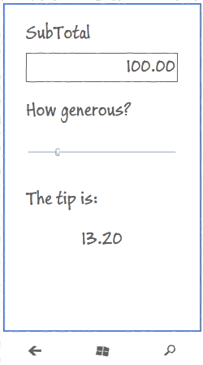
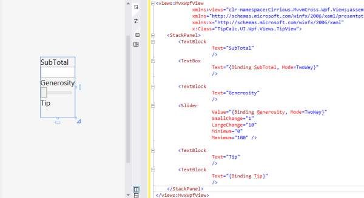
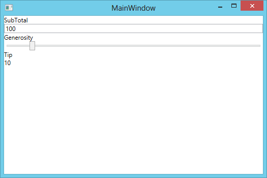

A Wpf UI Project
EditWe started with the goal of creating an app to help calculate what tip to leave in a restaurant
We had a plan to produce a UI based on this concept:

To satisfy this we built a ‘Core’ Portable Class Library project which contained:
- our ‘business logic’ -
ICalculation - our ViewModel -
TipViewModel - our
Appwhich contains the application wiring, including the start instructions.
We then added User Interfaces for Xamarin.Android, Xamarin.iOS, Windows UWP, Windows 8.1 Univeral, Windows 8.1 and Windows Phone Silverlight apps.
For our next project, let’s shift to Windows Desktop - via WPF - Windows Presentation Framework.
Here we’ll build up a new project ‘from empty’, just as we did for the Core, Android, iOS, Windows Universal Apps, Windows Phone Silverlight and Windows Store projects.
Obviously, to work with WPF, you will need to be working on the PC with Visual Studio
Create a new WPF Project
Add a new project to your solution - a ‘WPF Application’ with name TipCalc.UI.Wpf
Important - make sure this is at least .Net4.5 - as this is the version required for PCL Profile259 - goodbye, XP!
Within this, you’ll find the normal Wpf application constructs:
- the ‘Properties’ folder with the ‘AssemblyInfo’ file, some resources and a settings file
- the ‘App.Config’ configuration file
- the App.Xaml ‘application’ object
- the MainWindow.Xaml and MainWindows.Xaml.cs files that define the default Window for this app
Keep MainWindow.xaml
We do actually want a MainWindow for this app :)
Install MvvmCross
In the Package Manager Console, enter…
Install-Package MvvmCross.Core
Add a reference to TipCalc.Core.csproj
Add a reference to your TipCalc.Core project - the project we created in the last step which included:
- your
Calculationservice, - your
TipViewModel - your
Appwiring.
Add a Setup class
Just as we said during the construction of the other UI projects Every MvvmCross UI project requires a Setup class
This class sits in the root namespace (folder) of our UI project and performs the initialization of the MvvmCross framework and your application, including:
- the Inversion of Control (IoC) system
- the MvvmCross data-binding
- your
Appand its collection ofViewModels - your UI project and its collection of
Views
Most of this functionality is provided for you automatically. Within your Wpf UI project all you have to supply is:
- your
App- your link to the business logic andViewModelcontent
For TipCalc here’s all that is needed in Setup.cs:
using System.Windows.Threading;
using MvvmCross.Core.ViewModels;
using MvvmCross.Wpf.Platform;
using MvvmCross.Wpf.Views;
namespace TipCalc.UI.Wpf
{
public class Setup : MvxWpfSetup
{
public Setup(Dispatcher uiThreadDispatcher, IMvxWpfViewPresenter presenter) : base(uiThreadDispatcher, presenter)
{
}
protected override IMvxApplication CreateApp()
{
return new Core.App();
}
}
}
Modify the App.xaml.cs to use Setup
There are other lifecycles and display techniques that you can use to write Wpf apps.
However, here we will just use a ‘one window with one view’ approach.
To achieve this, add some lines to the WPF App class that:
- provide a private flag to determine if setup has already been done
bool _setupComplete;
- perform the setup - using a
Simplepresenter based onMainWindow
void DoSetup()
{
var presenter = new MvxSimpleWpfViewPresenter(MainWindow);
var setup = new Setup(Dispatcher, presenter);
setup.Initialize();
var start = Mvx.Resolve<IMvxAppStart>();
start.Start();
_setupComplete = true;
}
- override the
OnActivatedevent to perform this startup
protected override void OnActivated(System.EventArgs e)
{
if (!_setupComplete)
DoSetup();
base.OnActivated(e);
}
After you’ve done this your App.xaml.cs might look like:
using System.Windows;
using MvvmCross.Core.ViewModels;
using MvvmCross.Platform;
using MvvmCross.Wpf.Views;
namespace TipCalc.UI.Wpf
{
public partial class App : Application
{
bool _setupComplete;
void DoSetup()
{
var presenter = new MvxSimpleWpfViewPresenter(MainWindow);
var setup = new Setup(Dispatcher, presenter);
setup.Initialize();
var start = Mvx.Resolve<IMvxAppStart>();
start.Start();
_setupComplete = true;
}
protected override void OnActivated(System.EventArgs e)
{
if (!_setupComplete)
DoSetup();
base.OnActivated(e);
}
}
}
Add your View
Create the UserControl
Create a Views folder
Within this folder, add a new ‘User Control (WPF)’ and call it TipView.xaml
The page will generate:
- TipView.xaml
- TipView.xaml.cs
Turn TipView into the MvvmCross View for TipViewModel
Open the TipView.xaml.cs file.
Change the class to inherit from MvxWpfView
public partial class TipView : MvxWpfView
Altogether this looks like:
using MvvmCross.Wpf.Views;
namespace TipCalc.UI.Wpf.Views
{
/// <summary>
/// Interaction logic for TipView.xaml
/// </summary>
public partial class TipView : MvxWpfView
{
public TipView()
{
InitializeComponent();
}
}
}
Edit the XAML layout
Double click on the XAML file
This will open the XAML editor within Visual Studio.
Just as with Windows Uwp, I won’t go into much depth at all here about how to use the XAML or do the Windows data-binding. I’m assuming most readers are already coming from at least a little XAML background.
Change the root node from:
<UserControl
...
</UserControl>
to:
<views:MvxWpfView
xmlns:views="clr-namespace:MvvmCross.Wpf.Views;assembly=MvvmCross.Wpf"
...
</views:MvxWpfView>
To add the XAML user interface for our tip calculator, we will add exactly the same XAML as we added inside the ContentPanel grid for the Windows UWP example. This includes:
- a
StackPanelcontainer, into which we add:- some
TextBlockstatic text - a bound
TextBoxfor theSubTotal - a bound
Sliderfor theGenerosity - a bound
TextBlockfor theTip
- some
This will produce finished XAML like:
<views:MvxWpfView
x:Class="TipCalc.UI.Wpf.Views.TipView"
xmlns="http://schemas.microsoft.com/winfx/2006/xaml/presentation"
xmlns:x="http://schemas.microsoft.com/winfx/2006/xaml"
xmlns:mc="http://schemas.openxmlformats.org/markup-compatibility/2006"
xmlns:d="http://schemas.microsoft.com/expression/blend/2008"
xmlns:local="clr-namespace:TipCalc.UI.Wpf.Views"
xmlns:views="clr-namespace:MvvmCross.Wpf.Views;assembly=MvvmCross.Wpf"
mc:Ignorable="d"
d:DesignHeight="300" d:DesignWidth="300">
<Grid>
<StackPanel>
<TextBlock Text="SubTotal" />
<TextBox Text="{Binding SubTotal, Mode=TwoWay, UpdateSourceTrigger=PropertyChanged}" />
<TextBlock Text="Generosity" />
<Slider
Value="{Binding Generosity, Mode=TwoWay}"
SmallChange="1"
LargeChange="10"
Minimum="0"
Maximum="100" />
<TextBlock Text="Tip" />
<TextBlock Text="{Binding Tip}" />
</StackPanel>
</Grid>
</views:MvxWpfView>
Note that in XAML, OneWay binding is generally the default. To provide TwoWay binding we explicitly add Mode to our binding expressions: e.g. Value="{Binding Generosity,Mode=TwoWay}"
In the designer, this will look like:

The Wpf UI is complete!
At this point you should be able to run your application.
When it starts… you should see:

Moving on…
There’s more we could do to make this User Interface nicer and to make the app richer… but for this first application, we will leave it here for now.
And actually… that’s the end of our journey through this first app.
One day soon there will be more steps - a step for Mac desktop, a step for XBox, a step for TV, etc - but for now this is the end.